REP 47.6.1 Trans 辊 组件 
参考 PL:PL 47.6
Trans 辊 组件 (左侧 侧面)
Removal

执行IOT关机步骤. 确认电源已关闭并拔掉电源插头.
打开前盖板. (PL 47.1)
拆卸顶盖组件. (PL 47.1)
拆卸皮带 (Trans 辊). (REP 47.6.2)
拆卸轴承 of Trans 辊 组件. (图 1)
拆卸 KL-卡扣. (图 1)
拆卸 Cam. (图 1)
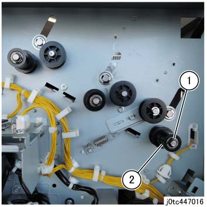
(图 1) tc447016
拆卸轴承. (图 2)
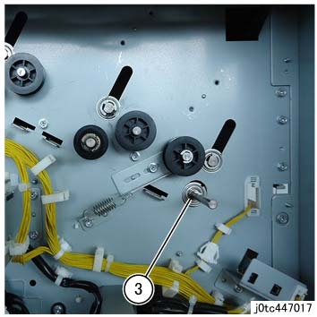
(图 2) tc447017
拆卸 释放 Inner 盖板. (PL 47.1)
拆卸 Idler 释放 支架 组件. (PL 47.7)
拆卸 释放 链接 组件. (图 3)
拆卸螺钉.
拆卸 Idler 释放 支架 组件.
拆卸皮带.
拆卸螺钉（x4）.
拆卸 释放 链接 组件.
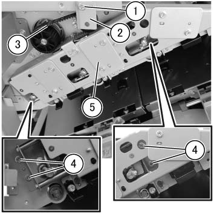
(图 3) tcw447010
拆卸 Arm 链接. (PL 47.7)
拆卸E型卡环 和 Bearing 的 释放 轴. (图 4)
拆卸E型卡环.
拆卸轴承.
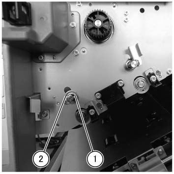
(图 4) tcw447011
使用 Trans 辊 组件 slightly lifted, 拆卸 Trans 辊 组件
抬起 释放 轴 slightly, 和 拆卸 it 从 the groove 的 下方 开关 入口 滑槽. (图 5)
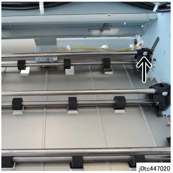
(图 5) tc447020
滑动 the Trans 辊 组件 到 后面. (图 6)
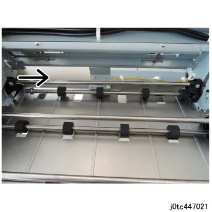
(图 6) tc447021
抬起 Trans 辊 组件 in the 方向 的 arrow 和 拆卸. (图 7)
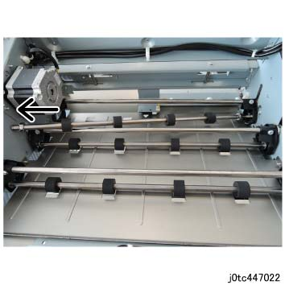
(图 7) tc447022
Trans 辊 组件 (中央)
Removal
执行IOT关机步骤. 确认电源已关闭并拔掉电源插头.
打开前盖板. (PL 47.1)
拆卸顶盖组件. (PL 47.1)
拆卸皮带 (Trans 辊). (REP 47.6.2)
拆卸轴承 of Trans 辊 组件.
拆卸 KL-卡扣. (图 8)
拆卸 Cam. (图 8)
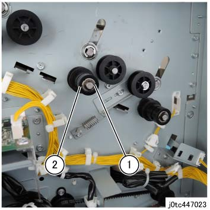
(图 8) tc447023
拆卸轴承 of Trans 辊 组件. (图 9)
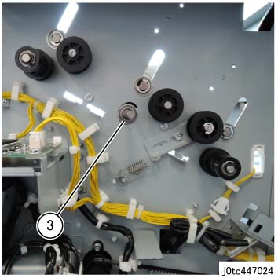
(图 9) tc447024
执行 the Removal 步骤 (REP 47.6.1) 用于 Trans 辊 组件 (左侧 侧面) 从 Steps 5 to 8.
拆卸E型卡环 和 Bearing 的 Trans 辊 组件. (图 10)
拆卸E型卡环.
拆卸轴承.
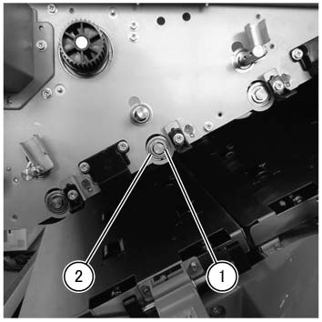
(图 10) tcw447012
使用 释放 轴 slightly lifted, 拆卸 Trans 辊 组件.
抬起 释放 轴 slightly, 和 拆卸 it 从 the groove 的 下方 开关 入口 滑槽. (图 11)
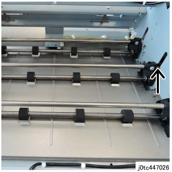
(图 11) tc447026
滑动 the Trans 辊 组件 到 后面. (图 12)
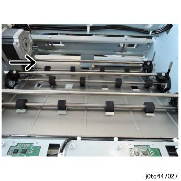
(图 12) tc447027
抬起 Trans 辊 组件 in the 方向 的 arrow 和 拆卸. (图 13)
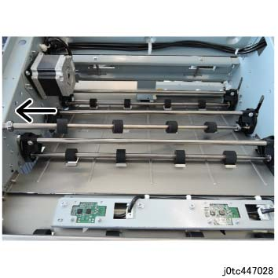
(图 13) tc447028
Trans 辊 组件 (右侧 侧面)
Removal
执行IOT关机步骤. 确认电源已关闭并拔掉电源插头.
打开前盖板. (PL 47.1)
拆卸顶盖组件. (PL 47.1)
拆卸皮带 (Trans 辊). (REP 47.6.2)
拆卸轴承 of Trans 辊 组件.
拆卸 KL-卡扣. (图 14)
拆卸 Cam. (图 14)
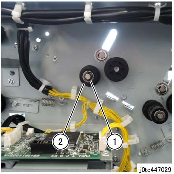
(图 14) tc447029
拆卸轴承 of Trans 辊 组件. (图 15)
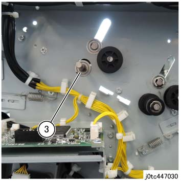
(图 15) tc447030
执行 the Removal 步骤 (REP 47.6.1) 用于 Trans 辊 组件 (左侧 侧面) 从 Steps 5 to 8.
拆卸E型卡环 (x2) 和 Bearing (x2) 的 释放 轴. (图 16)
拆卸E型卡环.
拆卸轴承.
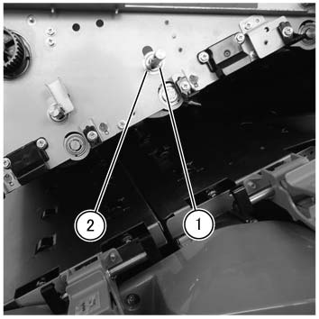
(图 16) tcw447013
使用 Trans 辊 组件 slightly lifted, 拆卸 Trans 辊 组件
抬起 释放 轴 slightly, 和 拆卸 it 从 the groove 的 下方 开关 入口 滑槽. (图 17)
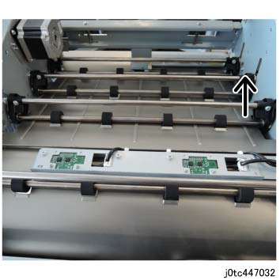
(图 17) tc447032
滑动 the Trans 辊 组件 到 后面. (图 18)
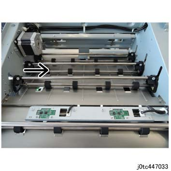
(图 18) tc447033
抬起 Trans 辊 组件 in the 方向 的 arrow 和 拆卸. (图 19)
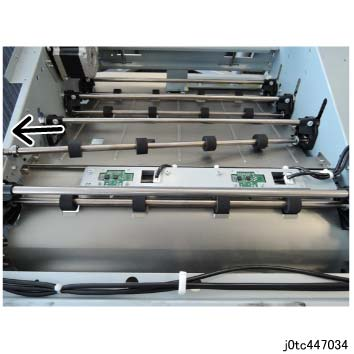
(图 19) tc447034